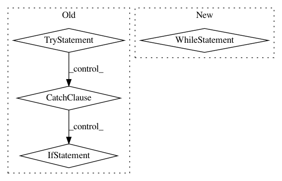

b048efa4f956b80266942caea6ee8b4311e1d17a,autokeras/classifier.py,ClassifierBase,fit,#ClassifierBase#Any#Any#Any#Any#Any#,119
Before Change
signal.signal(signal.SIGALRM, signal_handler)
signal.alarm(time_limit) // Ten seconds
try:
while True:
p = multiprocessing.Process(target=run_searcher_once, args=(x_train, y_train, x_test, y_test, self.path))
p.start()
p.join()
except TimeoutError:
if self.verbose:
print("Timed is up!")
return
def predict(self, x_test):
Return predict result for the testing data.
Args:
After Change
p.join()
start_time = time.time()
while time.time() - start_time <= time_limit:
p = multiprocessing.Process(target=run_searcher_once, args=(x_train, y_train, x_test, y_test, self.path))
p.start()
// Kill the process if necessary.
while time.time() - start_time <= time_limit:
if p.is_alive():
time.sleep(1)
else:
break
else:
// If break above the code in this else won"t run
p.terminate()
p.join()
def predict(self, x_test):
Return predict result for the testing data.
Args:
In pattern: SUPERPATTERN
Frequency: 3
Non-data size: 4
Instances
Project Name: keras-team/autokeras
Commit Name: b048efa4f956b80266942caea6ee8b4311e1d17a
Time: 2018-04-08
Author: jin@tamu.edu
File Name: autokeras/classifier.py
Class Name: ClassifierBase
Method Name: fit
Project Name: aleju/imgaug
Commit Name: 2a1bd4c93a998d16516d82893401b346d66a95e9
Time: 2019-07-19
Author: kontakt@ajung.name
File Name: imgaug/dtypes.py
Class Name:
Method Name: get_minimal_dtype
Project Name: OpenNMT/OpenNMT-py
Commit Name: 1cef0db206bc14c68be02b5bb8c40fccb0568adb
Time: 2018-01-14
Author: srush@sum1gpu02.rc.fas.harvard.edu
File Name: train.py
Class Name: DatasetLazyIter
Method Name: __iter__